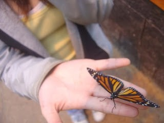
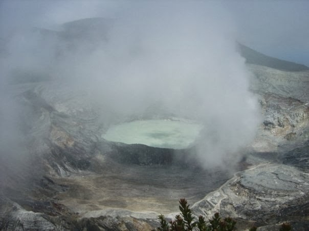

CENTRAL COSTA RICA
February, 2008
The first time I travelled without my parents was during my sophomore year of High School. It was my first taste of international travel that I can remember (since I was only 7 when I visited China/Hong Kong and was too young to really appreciate it) and I've been hooked ever since. My High School was hosting a week-long trip to Costa Rica and my friend, Livia, convinced me that I should go since she had already signed up. Not really knowing anything about the country except that they spoke Spanish and were somewhere South of us, I happily agreed and ended up loving the country more than I ever expected.

Our group was small (less than 13 people altogether) and included two of the most loved teachers at school - Señor Skorker and Señorita Lepore. During the majority of the trip, we traveled from destination to destination by bus. I am not usually a fan of bus tours, but our intimate group and hilarious tour guide, Juan Diego, made the entire trip incredibly fun.

After arriving in San José, one of our very first destinations was La Paz Waterfall Gardens. La Paz Waterfall Gardens has a beautiful butterfly observatory with over 25 different species of butterflies. We immediately learned that the words pura vida (meaning 'pure life' in Spanish) are the words that Costa Ricans live by because of their dedication to preserving wildlife. Pura Vida became our mantra for the next 7 days - and probably for many weeks after our trip as we came down from our Costa Rican high.
The La Paz Waterfalls is a wonder in itself, standing at approximately 120 feet. The waterfall as since been damaged by an Earthquake during 2009 so I was lucky enough to see it in its full glory. What was even more impressive though, was our trip to see Volcán Poás - an active stratovolcano near one of the most acidic lakes in the world Laguna Caliente.

Volcán Poás was a little hard to see at first since the area can get extremely cloudy. Fortunately for us, the weather cleared up and we were able to see into the crater. Seeing inside an active volcano, in my book, is pretty cool and very pura vida.